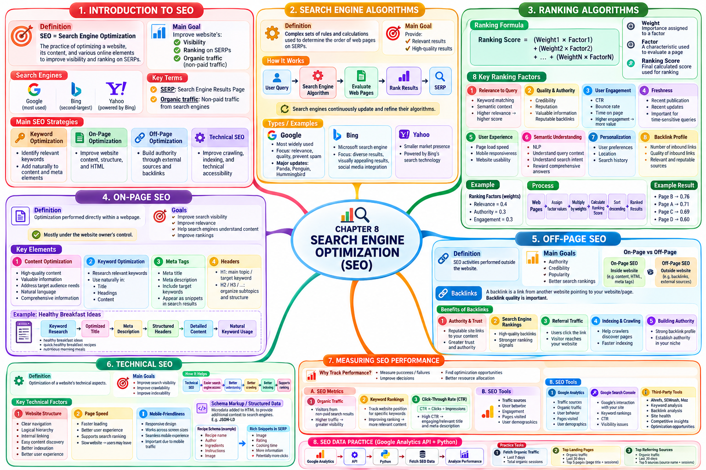

Tài liệu gốc: Slide bài giảng SEG301m Chương 8, "Search Engine Optimization" (26 slide)
Cách đọc: Lấy ví dụ một trang web công thức món ăn sáng, chương này theo dõi chu trình hoàn chỉnh: từ nhu cầu thông tin của người dùng, quy trình thu thập - lập chỉ mục - xếp hạng của máy tìm kiếm, cải thiện trang, đến đo lường hiệu quả. Các tên sản phẩm, thuật toán và Analytics API trong slide gốc phản ánh thời điểm biên soạn; các cập nhật đối chiếu với tài liệu chính thức năm 2026 được phân định rõ ràng.
Mục tiêu của chương
Sau khi học xong chương này, bạn có thể giải thích và thực hiện các nội dung sau:
- Giải thích bài toán SEO cần giải quyết và sự khác biệt giữa kết quả tìm kiếm tự nhiên (organic results) và quảng cáo trả phí (paid ads).
- Phân biệt rõ ba công đoạn: thu thập (crawl), lập chỉ mục (indexing) và xếp hạng (ranking), cùng vai trò của SEO trong từng khâu.
- Tính toán và tái hiện thứ tự xếp hạng của nhiều trang web dựa trên mô hình tổng trọng số giáo khoa.
- Phân biệt on-page SEO, off-page SEO, technical SEO; xây dựng các ví dụ cải tiến HTML và dữ liệu có cấu trúc JSON-LD.
- Tính toán và diễn giải các chỉ số: lượt hiển thị (impressions), lượt nhấp (clicks), tỷ lệ nhấp (CTR), lưu lượng tự nhiên (organic traffic) và thứ hạng hiển thị.
- Xử lý bài tập thực hành Analytics bằng kiến trúc Google Analytics 4 (GA4 Data API) hiện đại kết hợp phân tích trên dữ liệu mẫu offline.
SLIDE NGUỒN 1-3

Kiến thức cần chuẩn bị
- Thu thập (crawl) ở Chương 3 là công đoạn phát hiện và tải trang web về hệ thống.
- Chỉ mục (index) ở Chương 5 là cấu trúc giúp tra cứu nhanh tài liệu từ từ vựng.
- Xếp hạng (ranking) ở Chương 7 tính toán điểm số so sánh từ các đặc trưng của truy vấn và tài liệu.
- Điểm số chỉ là giá trị ước lượng nội bộ của công cụ tìm kiếm, không đảm bảo chắc chắn sự hài lòng của người dùng.
Tình huống thực tế xuyên suốt: Một trang web chuyên chia sẻ công thức bữa sáng cho sinh viên bận rộn. Người dùng tìm kiếm "bữa sáng giàu đạm nấu trong 10 phút". Chủ trang web muốn công cụ tìm kiếm phát hiện được trang, hiểu đúng nội dung và hiển thị nổi bật để người dùng lựa chọn.
8.1 SEO giải quyết vấn đề gì
SLIDE NGUỒN 4-5
Tối ưu hóa công cụ tìm kiếm (Search Engine Optimization - SEO) là tập hợp các hoạt động cải thiện giúp công cụ tìm kiếm và người dùng dễ dàng phát hiện, hiểu rõ cấu trúc và đánh giá đúng giá trị của trang web. Mục tiêu cốt lõi là nâng cao khả năng trang xuất hiện ở các vị trí tự nhiên hàng đầu cho những nhu cầu thông tin liên quan, tiếp cận đúng đối tượng độc giả mục tiêu.
Kết quả tự nhiên và Quảng cáo trả phí
| Phân loại | Cơ chế hiển thị | Chi phí | Mối quan hệ với SEO |
|---|---|---|---|
| Kết quả tự nhiên (Organic results) | Công cụ tìm kiếm tự xếp hạng dựa trên độ liên quan và chất lượng | Không tốn phí cho mỗi lượt nhấp chuột | Đối tượng trọng tâm của SEO |
| Quảng cáo trả phí (Paid ads) | Hệ thống quảng cáo đấu thầu từ khóa và nhắm mục tiêu hiển thị | Tính phí theo lượt nhấp (CPC) hoặc lượt xem | Kênh tách biệt độc lập với SEO |
Việc chạy quảng cáo không làm tăng trực tiếp thứ hạng tự nhiên, và làm SEO giỏi cũng không giúp trang tự động xuất hiện ở các vị trí dành riêng cho quảng cáo. Trên trang kết quả tìm kiếm (SERP), cả hai có thể cùng xuất hiện nhưng có nhãn phân biệt và cơ chế lựa chọn hoàn toàn độc lập.
Thu thập, Lập chỉ mục và Xếp hạng
Phát hiện URL mới
↓ Thu thập (Crawl)
Tải nội dung trang web về
↓ Bóc tách cấu trúc, kiểm tra thẻ chuẩn tắc (canonical)
Lưu trữ biểu diễn phục vụ tìm kiếm
↓ Lập chỉ mục (Indexing)
Tính điểm các ứng viên phù hợp với truy vấn
↓ Xếp hạng (Ranking)
Hiển thị danh sách kết quả lên trang SERP
- Thu thập (Crawl): Tìm thấy URL và kết nối tải trang web về.
- Lập chỉ mục (Indexing): Phân tích nội dung và quyết định có đưa trang vào cơ sở dữ liệu tìm kiếm hay không.
- Xếp hạng (Ranking): Chấm điểm các trang ứng viên cho từng truy vấn cụ thể và sắp xếp thứ tự hiển thị.
Ngay cả khi làm technical SEO giúp bot thu thập trang dễ dàng, điều đó vẫn không đảm bảo trang sẽ được lập chỉ mục hay được xếp thứ hạng cao. Trang có thể bị bỏ qua nếu nội dung trùng lặp, chất lượng sơ sài, bị coi là biến thể của URL khác hoặc không khớp với ý định người dùng.
Xem đáp án gợi ý
Không chắc chắn. Sitemap chỉ hỗ trợ crawler phát hiện sự tồn tại của URL nhanh hơn; việc bot có thu thập hay không, có chấp nhận lập chỉ mục hay không và thuật toán xếp hạng ở vị trí nào là các quyết định hoàn toàn độc lập phía sau.
8.2 Hiểu về thuật toán của công cụ tìm kiếm như thế nào
SLIDE NGUỒN 6-7
Thuật toán công cụ tìm kiếm kết hợp hàng trăm quy tắc, mô hình thống kê và học máy để ước lượng chất lượng và độ liên quan của trang web: nội dung văn bản, đồ thị liên kết, ngôn ngữ, vị trí địa lý, độ tươi mới, tính thân thiện trên thiết bị di động và các bộ lọc chống spam.
Slide 7 nhắc đến các bản cập nhật lịch sử của Google như Panda, Penguin, Hummingbird để giải thích các giai đoạn tiến hóa của thuật toán:
| Thuật ngữ trong slide | Trọng tâm lịch sử giải quyết | Lưu ý khi học tập |
|---|---|---|
| Panda | Xử lý các trang nội dung sơ sài, chất lượng kém, nhồi nhét từ khóa | Tránh coi đây là thuật toán đơn lẻ độc lập ở hiện tại |
| Penguin | Xử lý các hành vi thao túng liên kết nhân tạo (mua bán backlink rác) | Phân biệt liên kết tự nhiên với việc chạy theo số lượng |
| Hummingbird | Nâng cao khả năng hiểu ý định ngữ nghĩa thay vì chỉ so khớp từng chữ | Không có nghĩa là công cụ tìm kiếm bỏ qua khớp từ |
Cập nhật chính thức (2026): Tài liệu Google Search Central khuyến nghị xây dựng nội dung hữu ích hướng tới người dùng (people-first content), đảm bảo liên kết có thể thu thập được và tiêu đề rõ ràng, thay vì cố gắng tìm mẹo thao túng các công thức mật không bao giờ được công bố công khai.
8.3 Mô hình giáo khoa về xếp hạng tổng trọng số
SLIDE NGUỒN 8-11
Slide 8 đơn giản hóa bài toán xếp hạng bằng mô hình tổng trọng số tuyến tính:
d: trang web cần chấm điểm.m: số lượng đặc trưng sử dụng.x_i,d: giá trị đặc trưng thứicủa trangd, được chuẩn hóa trong khoảng từ 0 đến 1.w_i: trọng số của đặc trưng thứi(w_i ≥ 0và tổng các trọng số bằng 1).score(d): điểm số xếp hạng dùng để so sánh giữa các trang trong cùng một mô hình.
Slide 9-10 liệt kê các nhóm đặc trưng tiêu biểu: độ liên quan nội dung, độ uy tín chất lượng, tương tác người dùng, độ tươi mới, trải nghiệm trang, ngữ nghĩa và cấu trúc backlink. Lưu ý rằng không được khẳng định các chỉ số hành vi như tỷ lệ thoát hay thời gian xem trang là yếu tố xếp hạng trực tiếp của Google, vì chúng chịu ảnh hưởng nặng nề bởi vị trí hiển thị và loại truy vấn.
Tái hiện tính toán số liệu ở Slide 11
Đoạn mã mẫu dùng ba đặc trưng: Độ liên quan R (Relevance), Độ uy tín A (Authority), Tương tác người dùng E (Engagement):
score = 0.4R + 0.3A + 0.3E
| Trang web | R | A | E | Phép tính chi tiết | Điểm số tổng |
|---|---|---|---|---|---|
| Trang A | 0.8 | 0.7 | 0.6 | 0.4×0.8 + 0.3×0.7 + 0.3×0.6 |
0.71 |
| Trang B | 0.7 | 0.8 | 0.8 | 0.4×0.7 + 0.3×0.8 + 0.3×0.8 |
0.76 |
| Trang C | 0.9 | 0.6 | 0.5 | 0.4×0.9 + 0.3×0.6 + 0.3×0.5 |
0.69 |
| Trang D | 0.6 | 0.5 | 0.7 | 0.4×0.6 + 0.3×0.5 + 0.3×0.7 |
0.60 |
Thứ tự xếp hạng: Trang B > Trang A > Trang C > Trang D. Mặc dù Trang B có điểm liên quan R thấp hơn C (0.7 < 0.9), nhờ độ uy tín và tương tác vượt trội nên Trang B đã vươn lên dẫn đầu.
8.4 On-page SEO
SLIDE NGUỒN 12-14
On-page SEO là các hoạt động tối ưu hóa trực tiếp nội dung văn bản, cấu trúc mã HTML và trải nghiệm người dùng ngay bên trong trang web của mình.
Xây dựng nội dung khớp đúng ý định tìm kiếm
Với truy vấn bua sang giau dam nhanh gon, nếu chỉ nhồi nhét từ khóa vào tiêu đề mà nội dung bài viết không cung cấp công thức thực tế thì người dùng sẽ thoát ra ngay lập tức. Cần thiết kế theo quy trình:
- Xác định rõ nhu cầu và tiêu chí người dùng quan tâm (thời gian làm, nguyên liệu, hàm lượng đạm).
- Trình bày thông tin đó rõ ràng, mạch lạc ngay trong phần thân bài.
- Tổ chức cấu trúc phân cấp bằng thẻ
<title>, các thẻ tiêu đề đề mục<h1>,<h2>và liên kết nội bộ. - Sử dụng ngôn từ tự nhiên, không lặp lại từ khóa một cách gượng ép.
Ví dụ đối chiếu trước và sau khi tối ưu
Trước khi tối ưu: Tiêu đề nhồi nhét từ khóa, nội dung sơ sài:
<title>Breakfast breakfast quick healthy recipe best</title>
<h1>Welcome</h1>
<p>Try this great meal.</p>
Sau khi tối ưu: Cấu trúc rõ ràng, cung cấp đúng thông tin người dùng cần:
<head>
<title>Công thức bữa sáng giàu đạm nấu trong 10 phút</title>
<meta name="description"
content="Công thức bữa sáng 10 phút từ trứng và đậu cung cấp 28g đạm. Hướng dẫn chi tiết nguyên liệu, các bước nấu và mẹo thay thế.">
</head>
<body>
<h1>Bữa sáng giàu đạm nấu trong 10 phút</h1>
<h2>Nguyên liệu và Giá trị dinh dưỡng</h2>
<h2>Cách chế biến từng bước</h2>
<a href="/breakfast/meal-prep/">Xem thêm các món ăn sáng chuẩn bị trước</a>
</body>
- Thẻ
<title>là thẻ phần tử tiêu đề trang độc lập, không phải là thẻ<meta>. meta descriptionđóng vai trò là đoạn tóm tắt gợi ý để công cụ tìm kiếm cân nhắc tạo snippet.h1vàh2phản ánh cấu trúc phân cấp nội dung logic của bài viết.- Liên kết nội bộ (internal link) kết nối các bài viết liên quan trong cùng trang web, hỗ trợ người dùng khám phá và giúp crawler di chuyển thuận lợi.
8.5 Off-page SEO
SLIDE NGUỒN 15-16
Off-page SEO là các hoạt động xây dựng độ uy tín, danh tiếng và sự hiện diện của trang web từ các nguồn bên ngoài trang web của mình. Tiêu biểu nhất là xây dựng backlink (liên kết từ trang web khác trỏ về).
| Loại liên kết | Hướng trỏ | Vai trò chính |
|---|---|---|
| Liên kết nội bộ (Internal link) | Giữa các trang trong cùng một website | Hỗ trợ điều hướng, cấu trúc trang và giúp bot phát hiện trang mới |
| Backlink (Inbound link) | Từ website bên ngoài trỏ về website của mình | Tín hiệu tham chiếu chứng thực độ uy tín và thu hút lưu lượng giới thiệu |
Một liên kết trích dẫn nguồn công thức từ phòng nghiên cứu dinh dưỡng của trường đại học có giá trị uy tín cao gấp nhiều lần so với hàng trăm liên kết rác mua từ các diễn đàn vô danh. Chất lượng, độ liên quan và ngữ cảnh biên tập của liên kết ngoài luôn quan trọng hơn số lượng.
Người dùng bấm trực tiếp vào backlink để vào trang được ghi nhận là lưu lượng giới thiệu (referral traffic), khác biệt với lưu lượng đến từ việc bấm vào kết quả tìm kiếm (organic traffic).
Xem đáp án gợi ý
Không. Thuật toán chống spam liên kết của các công cụ tìm kiếm hiện đại dễ dàng phát hiện các mô hình mua bán liên kết bất thường và sẽ vô hiệu hóa giá trị của chúng, thậm chí áp dụng hình phạt hạ bậc toàn bộ website. 10 liên kết biên tập tự nhiên từ các nguồn uy tín cùng ngành mang lại giá trị bền vững và an toàn hơn rất nhiều.
8.6 Technical SEO
SLIDE NGUỒN 17-19
Technical SEO là các hoạt động tối ưu hóa hạ tầng kỹ thuật nhằm giúp crawler dễ dàng truy cập, thu thập, phân tích và lập chỉ mục nội dung trang web, đồng thời bảo đảm trải nghiệm tải trang nhanh và ổn định trên thiết bị di động.
Cấu trúc trang web, Tốc độ và Tính thân thiện di động
- Cấu trúc trang: Phân cấp danh mục rõ ràng, có thanh điều hướng breadcrumb, hạn chế tối đa các trang mồ côi (trang không có bất kỳ liên kết nội bộ nào trỏ tới).
- Tốc độ tải trang: Tối ưu hóa kích thước hình ảnh, nén dữ liệu truyền tải, loại bỏ mã JavaScript thừa và cải thiện thời gian phản hồi của máy chủ.
- Tính thân thiện di động: Thiết kế đáp ứng (responsive design), hiển thị tốt trên màn hình nhỏ từ 320px đến 390px mà không bị tràn khung hay vỡ bố cục.
Dữ liệu có cấu trúc và JSON-LD
Dữ liệu có cấu trúc (structured data) biểu diễn nội dung trang dưới dạng các trường thuộc tính mà máy móc có thể hiểu được tường minh. Cần phân biệt: Schema.org là hệ thống từ vựng chuẩn hóa; Microdata là cách nhúng thuộc tính vào thẻ HTML; còn JSON-LD là cú pháp biểu diễn dạng khối JSON đặt trong thẻ <script>.
Ví dụ mã JSON-LD chuẩn cho trang công thức món ăn:
<script type="application/ld+json">
{
"@context": "https://schema.org",
"@type": "Recipe",
"name": "Bữa sáng giàu đạm nấu trong 10 phút",
"description": "Công thức nấu bữa sáng giàu đạm từ trứng và đậu",
"image": ["https://example.com/images/protein-breakfast.jpg"],
"author": {
"@type": "Person",
"name": "Nguyễn Văn A"
},
"prepTime": "PT5M",
"cookTime": "PT5M",
"recipeYield": "1 người",
"recipeIngredient": ["Trứng gà 2 quả", "Đậu luộc 80g"],
"recipeInstructions": [
{
"@type": "HowToStep",
"text": "Đun nóng chảo và xào trứng cùng đậu chín tới."
}
]
}
</script>
Nội dung trong JSON-LD bắt buộc phải trùng khớp với nội dung thực tế người dùng nhìn thấy trên màn hình. Việc thêm JSON-LD không đảm bảo chắc chắn trang sẽ được hiển thị kết quả nhiều định dạng (rich results) hay tăng thứ hạng, nhưng giúp công cụ tìm kiếm hiểu chính xác ngữ nghĩa dữ liệu.
Bổ sung về các công cụ điều khiển thu thập
| Công cụ | Vai trò thực tế | Hiểu lầm thường gặp |
|---|---|---|
robots.txt |
Hướng dẫn crawler các vùng không nên quét | Không phải lệnh bảo mật xóa trang khỏi kết quả tìm kiếm |
Thẻ noindex |
Ra lệnh không đưa trang vào chỉ mục | Nếu bị robots.txt chặn quét thì bot không đọc được thẻ này |
Thẻ canonical |
Chỉ định URL đại diện chuẩn tắc khi có trang trùng lặp | Chỉ là gợi ý mạnh, công cụ tìm kiếm có thể tự chọn URL khác |
Sơ đồ sitemap |
Khai báo danh mục URL và thời gian cập nhật cho bot | Không đảm bảo mọi URL trong sitemap đều được lập chỉ mục |
8.7 Đo lường và đánh giá hiệu quả SEO
SLIDE NGUỒN 20-22
| Chỉ số | Định nghĩa | Ví dụ |
|---|---|---|
| Lượt hiển thị (Impressions) | Số lần liên kết của trang xuất hiện trên kết quả tìm kiếm | 2.000 lượt |
| Lượt nhấp chuột (Clicks) | Số lần người dùng bấm vào kết quả để vào trang | 120 lượt |
| Tỷ lệ nhấp (CTR) | Tỉ lệ phần trăm giữa lượt nhấp và lượt hiển thị: (clicks / impressions) × 100% |
120 / 2.000 × 100 = 6% |
| Lưu lượng tự nhiên (Organic traffic) | Lượng truy cập đến từ việc nhấp vào kết quả tìm kiếm tự nhiên | Số phiên (sessions) tự nhiên trong kỳ |
| Vị trí hiển thị (Position) | Thứ bậc trung bình của trang trên trang kết quả tìm kiếm | Vị trí trung bình 3.2 |
Nếu lượt hiển thị bằng 0 (impressions = 0), mẫu số bằng 0 nên CTR không xác định; hệ thống hiển thị là N/A thay vì tự gán là 0%.
Người dùng, Phiên truy cập và Lượt nhấp
- Người dùng (User): Thực thể cá nhân truy cập được hệ thống nhận diện.
- Phiên (Session): Chuỗi các tương tác của một người dùng trong một khoảng thời gian liên tục.
- Lượt nhấp (Click): Hành động bấm vào liên kết trên trang tìm kiếm.
Một người dùng có thể tạo ra nhiều phiên trong ngày. Một lượt nhấp trên trang tìm kiếm không nhất thiết chuyển hóa thành đúng một phiên đầy đủ trên web (do người dùng tắt trình duyệt trước khi trang tải xong hoặc chặn theo dõi).
Các công cụ đo lường chuyên dụng
- Google Search Console: Đo lường tương tác của người dùng trên trang kết quả tìm kiếm Google (lượt hiển thị, lượt nhấp, CTR, vị trí trung bình và các lỗi lập chỉ mục).
- Google Analytics: Đo lường hành vi của người dùng sau khi đã đặt chân vào trang web (số phiên, thời gian xem, trang đích, kênh chuyển đổi).
- Công cụ của bên thứ ba (Ahrefs, Semrush): Phân tích ước lượng về backlink, theo dõi từ khóa đối thủ và kiểm tra kỹ thuật.
Bài tập gốc: Phân tích lưu lượng SEO bằng Google Analytics
SLIDE NGUỒN 23-25
Mục tiêu của bài tập gốc:
- Lấy tổng lưu lượng tự nhiên (organic sessions) trong 7 ngày gần nhất.
- Lấy top 5 trang đích (landing pages) có lượng truy cập tự nhiên cao nhất trong 30 ngày gần nhất.
- Lấy top 5 nguồn truy cập tự nhiên (organic sources) trong 30 ngày gần nhất.
Cập nhật kiến trúc GA4 Data API hiện đại
Slide 25 được biên soạn từ thời Universal Analytics (đã chính thức ngừng hoạt động từ tháng 7/2023) sử dụng thư viện cũ googleanalytics. Hiện nay, thư viện chuẩn chính thức là google-analytics-data sử dụng phương thức runReport của GA4 Data API.
Trong GA4, chỉ số đo lường là sessions, chiều phân loại kênh là sessionDefaultChannelGroup lọc theo giá trị Organic Search. Để tránh dữ liệu chưa hoàn thiện của ngày hiện tại, phạm vi ngày kết thúc luôn ấn định là yesterday. Cần bật tham số keep_empty_rows=True và phân biệt rõ giữa trường hợp phản hồi rỗng (không có dữ liệu) với trường hợp có số liệu bằng 0:
from google.analytics.data_v1beta import BetaAnalyticsDataClient
from google.analytics.data_v1beta.types import (
DateRange, Dimension, Filter, FilterExpression,
Metric, OrderBy, RunReportRequest,
)
PROPERTY_ID = "YOUR_GA4_PROPERTY_ID"
client = BetaAnalyticsDataClient()
def first_metric_int(response):
"""Trả về giá trị số nguyên của metric đầu tiên. Trả về None nếu không có dòng nào."""
rows = list(getattr(response, "rows", ()) or ())
if not rows:
return None
metric_values = list(getattr(rows[0], "metric_values", ()) or ())
if not metric_values or metric_values[0].value in (None, ""):
raise ValueError("Phản hồi GA4 không chứa giá trị metric hợp lệ.")
return int(metric_values[0].value)
def dimension_session_rows(response):
"""Trích xuất danh sách các cặp (tên dimension, số lượng sessions)."""
result = []
for row in list(getattr(response, "rows", ()) or ()):
dimensions = list(getattr(row, "dimension_values", ()) or ())
metrics = list(getattr(row, "metric_values", ()) or ())
if not dimensions or not metrics:
raise ValueError("Dòng phản hồi GA4 thiếu dimension hoặc metric.")
result.append((dimensions[0].value, int(metrics[0].value)))
return result
def channel_filter(channel_name):
return FilterExpression(
filter=Filter(
field_name="sessionDefaultChannelGroup",
string_filter=Filter.StringFilter(
match_type=Filter.StringFilter.MatchType.EXACT,
value=channel_name,
case_sensitive=True,
),
)
)
organic_filter = channel_filter("Organic Search")
# 1. Tổng số session tự nhiên trong 7 ngày hoàn chỉnh gần nhất
total_request = RunReportRequest(
property=f"properties/{PROPERTY_ID}",
metrics=[Metric(name="sessions")],
date_ranges=[DateRange(start_date="7daysAgo", end_date="yesterday")],
dimension_filter=organic_filter,
keep_empty_rows=True,
)
total_response = client.run_report(total_request)
total_sessions = first_metric_int(total_response)
if total_sessions is None:
print("Không có dữ liệu phù hợp. Kiểm tra lại khoảng ngày hoặc bộ lọc.")
else:
print("Lưu lượng tự nhiên 7 ngày:", total_sessions)
def top_sessions(dimension_name, selected_filter):
"""Trả về top 5 mục có số lượng session cao nhất trong 30 ngày hoàn chỉnh."""
request = RunReportRequest(
property=f"properties/{PROPERTY_ID}",
dimensions=[Dimension(name=dimension_name)],
metrics=[Metric(name="sessions")],
date_ranges=[DateRange(start_date="30daysAgo", end_date="yesterday")],
dimension_filter=selected_filter,
order_bys=[
OrderBy(
metric=OrderBy.MetricOrderBy(metric_name="sessions"),
desc=True,
),
OrderBy(
dimension=OrderBy.DimensionOrderBy(
dimension_name=dimension_name,
),
desc=False,
),
],
keep_empty_rows=True,
limit=5,
)
return client.run_report(request)
def show_top(label, response):
rows = dimension_session_rows(response)
if not rows:
print(f"{label}: Không có dữ liệu.")
return
for name, sessions in rows:
print(f"{label}: {name}, {sessions}")
# 2. Top 5 trang đích trong 30 ngày hoàn chỉnh
landing_response = top_sessions(
"landingPagePlusQueryString",
organic_filter,
)
show_top("Trang đích tự nhiên", landing_response)
# 3. Top 5 nguồn tìm kiếm tự nhiên trong 30 ngày hoàn chỉnh
source_response = top_sessions("sessionSource", organic_filter)
show_top("Nguồn tìm kiếm tự nhiên", source_response)
Tuyệt đối không dùng khối except rộng bao quanh lời gọi API để tự động trả về 0 khi có lỗi. Lỗi phân quyền, sai cú pháp hay hết quota là lỗi hệ thống cần được thông báo và xử lý đúng bản chất, không được nhầm lẫn với số liệu thống kê bằng 0.
Nếu muốn phân tích nguồn giới thiệu (referral traffic), chỉ cần truyền bộ lọc kênh Referral:
referral_filter = channel_filter("Referral")
referral_response = top_sessions("sessionSource", referral_filter)
show_top("Nguồn giới thiệu", referral_response)
Bài thực hành phân tích trên dữ liệu mẫu Offline
Để sinh viên có thể tự thực hành và kiểm tra kết quả ngay cả khi không có tài khoản Google Analytics thực tế, dữ liệu mẫu đã tổng hợp theo từng ngày được chuẩn bị với mốc tham chiếu là ngày 2026-09-28:
- Cửa sổ 7 ngày hoàn chỉnh: từ
2026-09-21đến2026-09-27(đủ 7 ngày). - Cửa sổ 30 ngày hoàn chỉnh: từ
2026-08-29đến2026-09-27(đủ 30 ngày). - Ngày hiện tại
2026-09-28chưa kết thúc nên được loại trừ để đảm bảo tính toàn vẹn.
Bảng dữ liệu mẫu:
| Ngày | Kênh truy cập | Nguồn truy cập | Trang đích | Số session |
|---|---|---|---|---|
| 2026-08-28 | Organic Search | /outside/ |
90 | |
| 2026-08-29 | Organic Search | /breakfast/protein/ |
12 | |
| 2026-09-01 | Organic Search | bing | /breakfast/oats/ |
10 |
| 2026-09-05 | Organic Search | duckduckgo | /breakfast/quick/ |
9 |
| 2026-09-10 | Referral | campus.example | /breakfast/protein/ |
30 |
| 2026-09-12 | Organic Search | yahoo | /breakfast/eggs/ |
8 |
| 2026-09-15 | Organic Search | /breakfast/protein/ |
18 | |
| 2026-09-18 | Organic Search | ecosia | /breakfast/smoothie/ |
8 |
| 2026-09-20 | Organic Search | brave | /breakfast/toast/ |
6 |
| 2026-09-21 | Organic Search | bing | /breakfast/protein/ |
8 |
| 2026-09-22 | Organic Search | /breakfast/quick/ |
31 | |
| 2026-09-23 | Referral | campus.example | /breakfast/oats/ |
12 |
| 2026-09-24 | Organic Search | /breakfast/oats/ |
19 | |
| 2026-09-25 | Organic Search | duckduckgo | /breakfast/eggs/ |
11 |
| 2026-09-26 | Organic Search | /breakfast/protein/ |
42 | |
| 2026-09-27 | Organic Search | bing | /breakfast/toast/ |
15 |
| 2026-09-28 | Organic Search | /breakfast/protein/ |
99 |
Đoạn mã Python xử lý dữ liệu chuẩn xác:
from collections import defaultdict
from datetime import date, timedelta
REFERENCE_DATE = date(2026, 9, 28)
rows = [
{"date": "2026-08-28", "channel": "Organic Search", "source": "google", "landing_page": "/outside/", "sessions": 90},
{"date": "2026-08-29", "channel": "Organic Search", "source": "google", "landing_page": "/breakfast/protein/", "sessions": 12},
{"date": "2026-09-01", "channel": "Organic Search", "source": "bing", "landing_page": "/breakfast/oats/", "sessions": 10},
{"date": "2026-09-05", "channel": "Organic Search", "source": "duckduckgo", "landing_page": "/breakfast/quick/", "sessions": 9},
{"date": "2026-09-10", "channel": "Referral", "source": "campus.example", "landing_page": "/breakfast/protein/", "sessions": 30},
{"date": "2026-09-12", "channel": "Organic Search", "source": "yahoo", "landing_page": "/breakfast/eggs/", "sessions": 8},
{"date": "2026-09-15", "channel": "Organic Search", "source": "google", "landing_page": "/breakfast/protein/", "sessions": 18},
{"date": "2026-09-18", "channel": "Organic Search", "source": "ecosia", "landing_page": "/breakfast/smoothie/", "sessions": 8},
{"date": "2026-09-20", "channel": "Organic Search", "source": "brave", "landing_page": "/breakfast/toast/", "sessions": 6},
{"date": "2026-09-21", "channel": "Organic Search", "source": "bing", "landing_page": "/breakfast/protein/", "sessions": 8},
{"date": "2026-09-22", "channel": "Organic Search", "source": "google", "landing_page": "/breakfast/quick/", "sessions": 31},
{"date": "2026-09-23", "channel": "Referral", "source": "campus.example", "landing_page": "/breakfast/oats/", "sessions": 12},
{"date": "2026-09-24", "channel": "Organic Search", "source": "google", "landing_page": "/breakfast/oats/", "sessions": 19},
{"date": "2026-09-25", "channel": "Organic Search", "source": "duckduckgo", "landing_page": "/breakfast/eggs/", "sessions": 11},
{"date": "2026-09-26", "channel": "Organic Search", "source": "google", "landing_page": "/breakfast/protein/", "sessions": 42},
{"date": "2026-09-27", "channel": "Organic Search", "source": "bing", "landing_page": "/breakfast/toast/", "sessions": 15},
{"date": "2026-09-28", "channel": "Organic Search", "source": "google", "landing_page": "/breakfast/protein/", "sessions": 99},
]
def completed_window(reference_date, days):
end = reference_date - timedelta(days=1)
start = end - timedelta(days=days - 1)
return start, end
def filtered_rows(records, start, end, channel):
return [
row for row in records
if start <= date.fromisoformat(row["date"]) <= end
and row["channel"] == channel
]
def total_sessions(records, start, end, channel="Organic Search"):
return sum(row["sessions"] for row in filtered_rows(records, start, end, channel))
def top_groups(records, start, end, key, channel="Organic Search", limit=5):
totals = defaultdict(int)
for row in filtered_rows(records, start, end, channel):
totals[row[key]] += row["sessions"]
return sorted(totals.items(), key=lambda item: (-item[1], item[0]))[:limit]
start_7, end_7 = completed_window(REFERENCE_DATE, 7)
start_30, end_30 = completed_window(REFERENCE_DATE, 30)
organic_7 = total_sessions(rows, start_7, end_7)
top_landing_pages = top_groups(rows, start_30, end_30, "landing_page")
top_organic_sources = top_groups(rows, start_30, end_30, "source")
print("7完了日の自然検索セッション:", organic_7)
print("30完了日の上位ランディングページ:", top_landing_pages)
print("30完了日の上位自然検索流入元:", top_organic_sources)
Kết quả tính toán:
7完了日の自然検索セッション: 126
30完了日の上位ランディングページ:
[('/breakfast/protein/', 80), ('/breakfast/quick/', 40),
('/breakfast/oats/', 29), ('/breakfast/toast/', 21),
('/breakfast/eggs/', 19)]
30完了日の上位自然検索流入元:
[('google', 122), ('bing', 33), ('duckduckgo', 20),
('ecosia', 8), ('yahoo', 8)]
Giải thích số liệu:
- Trong 7 ngày hoàn chỉnh (
21/09đến27/09), tổng lượng session tìm kiếm tự nhiên là8 + 31 + 19 + 11 + 42 + 15 = 126. - Trang
/breakfast/protein/đạt12 + 18 + 8 + 42 = 80session, đứng đầu danh sách trang đích. - Nguồn
googleđạt12 + 18 + 31 + 19 + 42 = 122session, đứng đầu các công cụ tìm kiếm tự nhiên. - Dữ liệu Referral của
campus.examplehoàn toàn bị tách rời khỏi báo cáo tìm kiếm tự nhiên.
Bài tập cuối chương
SLIDE NGUỒN 23-25
Bài tập 1: Thiết kế trang web chuẩn SEO
Thiết kế các thẻ meta và cấu trúc HTML cho một trang công thức bữa sáng:
- Xác định nhu cầu thông tin mục tiêu.
- Viết thẻ
<title>, thẻ<meta name="description">, tiêu đề<h1>,<h2>và các liên kết nội bộ. - Xây dựng khối mã JSON-LD tương ứng theo từ điển Schema.org Recipe.
Xem hướng dẫn giải
Tiêu đề và <h1> cần chứa từ khóa trọng tâm nhưng phải diễn đạt tự nhiên; các thẻ <h2> phân tách mạch lạc nguyên liệu và cách nấu. Thẻ mô tả tóm tắt giá trị bài viết trong khoảng 150-160 ký tự. Các liên kết nội bộ dẫn tới các bài viết liên quan trong cùng chuyên mục bữa sáng. Khối JSON-LD phải phản ánh đúng dữ liệu đang hiển thị trên trang để tránh bị phạt lỗi cấu trúc.
Bài tập 2: Tính toán và phân tích chỉ số CTR
Một trang web đạt 2.400 lượt hiển thị và nhận được 96 lượt nhấp chuột trong tháng. Hãy tính tỷ lệ nhấp (CTR). Nếu sang tháng tiếp theo, tỷ lệ này tăng lên 5.0%, liệu có thể khẳng định chắc chắn rằng dự án SEO đã thành công rực rỡ không?
Xem đáp án gợi ý
Tỷ lệ nhấp ban đầu là CTR = (96 / 2.400) × 100% = 4.0%. Việc tăng lên 5.0% chưa đủ cơ sở để khẳng định chắc chắn thành công; cần kiểm tra xem tổng số lượt hiển thị có bị giảm sút hay không (nếu hiển thị ít đi chỉ còn 1.000 lượt mà được 50 nhấp thì CTR là 5.0% nhưng tổng traffic lại giảm từ 96 xuống 50). Ngoài ra, cần đối chiếu với vị trí xếp hạng trung bình và phân tích xem sự gia tăng có đến từ thương hiệu hay không.
Tổng kết
SLIDE NGUỒN 26
- SEO là quá trình cải tiến kỹ thuật, nội dung và danh tiếng giúp người dùng và công cụ tìm kiếm tìm thấy và đánh giá đúng trang web.
- Thu thập (crawl), lập chỉ mục (index) và xếp hạng (rank) là ba công đoạn độc lập; tối ưu kỹ thuật không đảm bảo việc được lên top.
- Mô hình tổng trọng số giáo khoa giúp hiểu nguyên lý kết hợp đa đặc trưng nhưng không đại diện cho công thức bí mật của công cụ tìm kiếm thực tế.
- On-page SEO tập trung vào nội dung và mã HTML; Off-page SEO tập trung vào liên kết trích dẫn bên ngoài; Technical SEO tập trung vào hạ tầng truy cập, tốc độ và dữ liệu cấu trúc.
- Google Search Console, Google Analytics và công cụ bên thứ ba phục vụ các mục đích quan sát đo lường ở các điểm chạm khác nhau.
- Các bài tập thực hành Analytics cần được cập nhật theo chuẩn GA4 Data API hiện đại và thẩm định trên dữ liệu có đối chứng.
Câu hỏi tự kiểm tra
- Kết quả tìm kiếm tự nhiên (organic) khác kết quả quảng cáo trả phí (paid ads) ở điểm mấu chốt nào?
- Một trang web có thể được crawler thu thập thành công thì có chắc chắn sẽ được đưa vào chỉ mục không?
- Vì sao gọi
<title>là thẻ meta lại là cách dùng từ thiếu chuẩn xác về mặt kỹ thuật? - Liên kết nội bộ (internal link) và backlink khác nhau như thế nào về hướng trỏ?
- Khi lượt hiển thị bằng 0 (
impressions = 0), tỷ lệ nhấp CTR được xử lý như thế nào? - Google Search Console và Google Analytics phân chia phạm vi đo lường như thế nào?
- Nhúng dữ liệu có cấu trúc JSON-LD vào mã nguồn có đảm bảo trang web chắc chắn xuất hiện kết quả nhiều định dạng (rich results) không?
Xem đáp án gợi ý
- Kết quả tự nhiên do thuật toán tìm kiếm tự đánh giá dựa trên độ liên quan và chất lượng mà không mất tiền cho mỗi nhấp chuột; quảng cáo trả phí do hệ thống đấu thầu từ khóa quyết định vị trí và tính tiền theo từng lượt click.
- Không chắc chắn. Crawler chỉ làm nhiệm vụ tải trang; khâu lập chỉ mục phía sau có thể loại bỏ trang nếu phát hiện nội dung sao chép, spam hoặc không có giá trị độc bản.
- Vì
<title>là một phần tử HTML độc lập với cú pháp<title>...</title>, còn thẻ meta có cú pháp hoàn toàn khác<meta name="..." content="...">. - Liên kết nội bộ kết nối giữa các trang bên trong cùng một website; backlink là liên kết từ một website bên ngoài khác trỏ về website của mình.
- Khi mẫu số bằng 0, phép chia không xác định trong toán học, do đó hệ thống không được gán là 0% mà phải hiển thị là
N/A(không áp dụng). - Search Console đo lường tương tác trên trang kết quả tìm kiếm (SERP) trước khi người dùng vào trang; Google Analytics đo lường hành vi của người dùng sau khi đã đặt chân vào bên trong website.
- Hoàn toàn không đảm bảo. Công cụ tìm kiếm còn xét duyệt tính xác thực của dữ liệu hiển thị, chất lượng tổng thể của trang web và chính sách hiển thị của thuật toán tại thời điểm đó.
Chuyển tiếp sang chương sau
Để đánh giá một hệ thống tìm kiếm vận hành tốt đến đâu, ta không thể chỉ nhìn vào cảm tính hay một vài truy vấn riêng lẻ. Chương 9 tiếp theo sẽ nghiên cứu các phương pháp đánh giá định lượng khoa học: Precision, Recall, F-measure, MAP, MRR, NDCG cùng các phép kiểm định thống kê có ý nghĩa.
Bảng thuật ngữ
| English | Tiếng Việt | Ý nghĩa trong chương này |
|---|---|---|
| Search Engine Optimization | Tối ưu hóa công cụ tìm kiếm (SEO) | Quá trình tối ưu giúp trang web được tìm thấy và xếp hạng tốt hơn |
| SERP | Trang kết quả tìm kiếm | Giao diện hiển thị danh sách kết quả tự nhiên và quảng cáo |
| Organic result | Kết quả tự nhiên | Kết quả xếp hạng khách quan không phải vị trí mua quảng cáo |
| On-page SEO | On-page SEO | Hoạt động tối ưu hóa trực tiếp nội dung và mã HTML của trang web |
| Off-page SEO | Off-page SEO | Hoạt động xây dựng danh tiếng và liên kết từ bên ngoài trỏ về |
| Technical SEO | Technical SEO | Tối ưu hóa hạ tầng kỹ thuật, tốc độ, khả năng thu thập và cấu trúc |
| Internal link | Liên kết nội bộ | Liên kết giữa các trang bên trong cùng một website |
| Backlink | Backlink | Liên kết từ website bên ngoài trỏ về trang web của mình |
| Structured data | Dữ liệu có cấu trúc | Định dạng dữ liệu chuẩn hóa giúp máy móc hiểu ngữ nghĩa trang |
| JSON-LD | JSON-LD | Cú pháp nhúng dữ liệu có cấu trúc dưới dạng khối JSON trong thẻ script |
| Impression | Lượt hiển thị | Số lần trang web xuất hiện trên trang kết quả tìm kiếm |
| Click-through rate | Tỷ lệ nhấp (CTR) | Tỉ lệ phần trăm giữa lượt nhấp chuột và lượt hiển thị |
| Organic traffic | Lưu lượng tự nhiên | Lượng truy cập đến từ việc nhấp vào kết quả tìm kiếm tự nhiên |
| Landing page | Trang đích | Trang web đầu tiên mà người dùng đặt chân tới trong một phiên |
| Referral traffic | Lưu lượng giới thiệu | Lượng truy cập đến từ các liên kết giới thiệu trên trang web khác |